Behind every mobject and animation sits a toolbox of plain R functions: vector algebra, Bezier curve helpers, interpolation, rate functions, path functions, list helpers and file helpers. They are exported so you can use them in your own scenes. This vignette walks through all of them, printing their results and drawing pictures where geometry helps.
Everything here works on ordinary R values. A point or a vector is a
numeric vector of length 3, c(x, y, z), and a set of points
is an n x 3 matrix with one point per row. Results that are
tiny floating point noise (such as 6.1e-17 instead of
0) are rounded with zapsmall() in the examples
so they read well.
Constants
Directions
The direction constants are unit vectors. Add and scale them to build
points: 2 * RIGHT + UP is the point
(2, 1, 0).
rbind(ORIGIN, UP, DOWN, LEFT, RIGHT, IN, OUT)
#> [,1] [,2] [,3]
#> ORIGIN 0 0 0
#> UP 0 1 0
#> DOWN 0 -1 0
#> LEFT -1 0 0
#> RIGHT 1 0 0
#> IN 0 0 -1
#> OUT 0 0 1
rbind(UL, UR, DL, DR)
#> [,1] [,2] [,3]
#> UL -1 1 0
#> UR 1 1 0
#> DL -1 -1 0
#> DR 1 -1 0
rbind(X_AXIS, Y_AXIS, Z_AXIS)
#> [,1] [,2] [,3]
#> X_AXIS 1 0 0
#> Y_AXIS 0 1 0
#> Z_AXIS 0 0 1
2 * RIGHT + UP
#> [1] 2 1 0UL, UR, DL and DR
are the diagonal corners (UL = UP + LEFT), so they are not
unit vectors. IN and OUT point into and out of
the screen; OUT is the default rotation axis
everywhere.
dirs <- list(RIGHT = RIGHT, UR = UR, UP = UP, UL = UL, LEFT = LEFT, DL = DL, DOWN = DOWN, DR = DR)
cols <- color_gradient(c(BLUE, GREEN, YELLOW, RED), length(dirs))
pic <- VGroup()
for (i in seq_along(dirs)) {
d <- dirs[[i]]
pic$add(Arrow(ORIGIN, 2 * d, buff = 0, color = cols[i]))
pic$add(Text(names(dirs)[i], font_size = 26, color = cols[i])$move_to(2.6 * d))
}
plot(pic)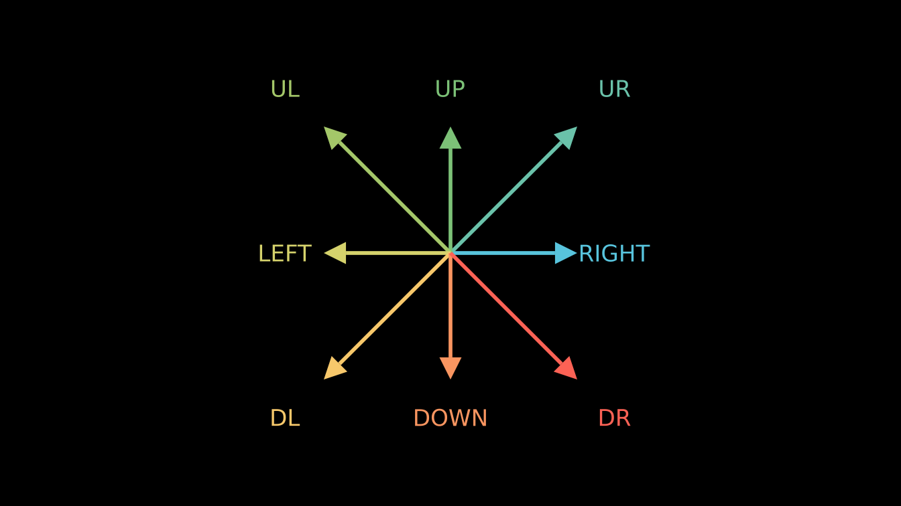
Angles
PI and TAU (which is 2 * PI,
one full turn) are the usual circle constants. Angles are in radians;
multiply by DEGREES to write them in degrees.
c(PI = PI, TAU = TAU, DEGREES = DEGREES)
#> PI TAU DEGREES
#> 3.14159265 6.28318531 0.01745329
90 * DEGREES
#> [1] 1.570796Buffers and defaults
Buffers are the standard gaps used by next_to(),
to_edge(), arrange() and friends. The
DEFAULT_ constants are the defaults of strokes, fonts,
dots, dashes, arrow tips, waits and point clouds.
c(SMALL_BUFF = SMALL_BUFF, MED_SMALL_BUFF = MED_SMALL_BUFF,
MED_LARGE_BUFF = MED_LARGE_BUFF, LARGE_BUFF = LARGE_BUFF,
DEFAULT_MOBJECT_TO_EDGE_BUFFER = DEFAULT_MOBJECT_TO_EDGE_BUFFER,
DEFAULT_MOBJECT_TO_MOBJECT_BUFFER = DEFAULT_MOBJECT_TO_MOBJECT_BUFFER)
#> SMALL_BUFF MED_SMALL_BUFF
#> 0.10 0.25
#> MED_LARGE_BUFF LARGE_BUFF
#> 0.50 1.00
#> DEFAULT_MOBJECT_TO_EDGE_BUFFER DEFAULT_MOBJECT_TO_MOBJECT_BUFFER
#> 0.50 0.25
c(DEFAULT_STROKE_WIDTH = DEFAULT_STROKE_WIDTH, DEFAULT_FONT_SIZE = DEFAULT_FONT_SIZE,
DEFAULT_DOT_RADIUS = DEFAULT_DOT_RADIUS, DEFAULT_SMALL_DOT_RADIUS = DEFAULT_SMALL_DOT_RADIUS,
DEFAULT_DASH_LENGTH = DEFAULT_DASH_LENGTH, DEFAULT_ARROW_TIP_LENGTH = DEFAULT_ARROW_TIP_LENGTH,
DEFAULT_WAIT_TIME = DEFAULT_WAIT_TIME,
DEFAULT_POINTWISE_FUNCTION_RUN_TIME = DEFAULT_POINTWISE_FUNCTION_RUN_TIME,
SCALE_FACTOR_PER_FONT_POINT = SCALE_FACTOR_PER_FONT_POINT,
DEFAULT_POINT_DENSITY_1D = DEFAULT_POINT_DENSITY_1D,
DEFAULT_POINT_DENSITY_2D = DEFAULT_POINT_DENSITY_2D)
#> DEFAULT_STROKE_WIDTH DEFAULT_FONT_SIZE
#> 4.000000000 48.000000000
#> DEFAULT_DOT_RADIUS DEFAULT_SMALL_DOT_RADIUS
#> 0.080000000 0.040000000
#> DEFAULT_DASH_LENGTH DEFAULT_ARROW_TIP_LENGTH
#> 0.050000000 0.350000000
#> DEFAULT_WAIT_TIME DEFAULT_POINTWISE_FUNCTION_RUN_TIME
#> 1.000000000 3.000000000
#> SCALE_FACTOR_PER_FONT_POINT DEFAULT_POINT_DENSITY_1D
#> 0.001041667 10.000000000
#> DEFAULT_POINT_DENSITY_2D
#> 25.000000000The units Pixels, Percent(),
Degrees and Munits convert other measures into
scene units; they are described in Mobjects and
geometry.
Font, joint and cap constants
The font constants are the strings that Text() accepts
for slant and weight, so
Text("Hi", weight = BOLD) reads like upstream code.
c(NORMAL, ITALIC, OBLIQUE)
#> [1] "NORMAL" "ITALIC" "OBLIQUE"
c(THIN, ULTRALIGHT, LIGHT, SEMILIGHT, BOOK, NORMAL, MEDIUM, SEMIBOLD, BOLD, ULTRABOLD, HEAVY, ULTRAHEAVY)
#> [1] "THIN" "ULTRALIGHT" "LIGHT" "SEMILIGHT" "BOOK"
#> [6] "NORMAL" "MEDIUM" "SEMIBOLD" "BOLD" "ULTRABOLD"
#> [11] "HEAVY" "ULTRAHEAVY"
str(LineJointType)
#> List of 4
#> $ AUTO : chr "auto"
#> $ ROUND: chr "round"
#> $ BEVEL: chr "bevel"
#> $ MITER: chr "miter"
str(CapStyleType)
#> List of 4
#> $ AUTO : chr "auto"
#> $ ROUND : chr "round"
#> $ BUTT : chr "butt"
#> $ SQUARE: chr "square"LineJointType and CapStyleType name the
values of a VMobject’s joint_type and
cap_style: how the corners of a thick stroke are joined and
how the open ends are capped.
zigzag <- rbind(c(-1, -0.6, 0), c(-0.3, 0.6, 0), c(0.3, -0.6, 0), c(1, 0.6, 0))
joints <- VGroup()
for (j in c("round", "bevel", "miter")) {
line <- VMobject(stroke_width = 30, color = BLUE, joint_type = LineJointType[[toupper(j)]])
line$set_points_as_corners(zigzag)
joints$add(VGroup(line, Text(paste("joint:", j), font_size = 24)$next_to(line, DOWN)))
}
caps <- VGroup()
for (cp in c("butt", "round", "square")) {
line <- Line(LEFT, RIGHT, stroke_width = 40, color = ORANGE, cap_style = CapStyleType[[toupper(cp)]])
caps$add(VGroup(line, Text(paste("cap:", cp), font_size = 24)$next_to(line, DOWN)))
}
plot(VGroup(joints$arrange(RIGHT, buff = 1), caps$arrange(RIGHT, buff = 1.2))$arrange(DOWN, buff = 0.8))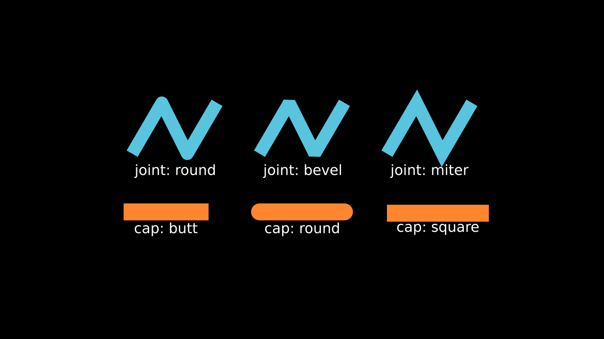
Interface constants
A few constants come from upstream’s command line interface and
interactive scenes: the messages printed when a scene is missing, the
key codes of Shift and Ctrl, the default window position, and the
renderer names the renderer setting accepts.
cat(SCENE_NOT_FOUND_MESSAGE, NO_SCENE_MESSAGE, INVALID_NUMBER_MESSAGE, sep = "\n")
#>
#> {} is not in the script
#>
#>
#> There are no scenes inside that module
#>
#> Invalid scene numbers have been specified. Aborting.
cat(CHOOSE_NUMBER_MESSAGE)
#>
#> Choose number corresponding to desired scene/arguments.
#> (Use comma separated list for multiple entries or use "*" to select all scenes.)
#> Choice(s):
EPILOG
#> [1] "Made with <3 by Manim Community developers."
str(CONTEXT_SETTINGS)
#> List of 3
#> $ align_option_groups: logi TRUE
#> $ align_sections : logi TRUE
#> $ show_constraints : logi TRUE
c(SHIFT_VALUE = SHIFT_VALUE, CTRL_VALUE = CTRL_VALUE, START_X = START_X, START_Y = START_Y)
#> SHIFT_VALUE CTRL_VALUE START_X START_Y
#> 65505 65507 30 20
unlist(RendererType)
#> CAIRO OPENGL
#> "cairo" "opengl"Upstream style module access
Python code often writes rate_functions.ease_in_sine or
color.BLUE_C. The lists rate_functions and
color give the same access, which helps when porting a
scene line by line. Everything inside them is also exported
directly.
rate_functions$smooth(0.25)
#> [1] 0.07010372
identical(rate_functions$smooth, smooth_rate)
#> [1] TRUE
color$BLUE_C
#> [1] "#58C4DD"
color$X11$BEIGE
#> [1] "#F5F5DC"Vectors and space operations
Lengths, products and centers
v <- c(3, 4, 0)
get_norm(v)
#> [1] 5
normalize(v)
#> [1] 0.6 0.8 0.0
normalize(ORIGIN, fall_back = RIGHT) # a zero vector has no direction
#> [1] 1 0 0
cross(RIGHT, UP)
#> [1] 0 0 1
cross2d(RIGHT, UP) # the z component of the cross product
#> [1] 1
get_unit_normal(RIGHT, UR)
#> [1] 0 0 1
midpoint(LEFT, UP)
#> [1] -0.5 0.5 0.0
center_of_mass(rbind(LEFT, RIGHT, 3 * UP))
#> [1] 0 1 0cross2d() also works row by row on matrices, which is
handy when many segments are tested at once:
Angles and rotations
angle_of_vector() gives the angle of a vector in the
plane, measured counterclockwise from RIGHT;
angle_between_vectors() gives the unsigned angle between
two vectors in space.
angle_of_vector(UP) / DEGREES
#> [1] 90
angle_of_vector(DL) / DEGREES
#> [1] -135
angle_between_vectors(RIGHT, UR) / DEGREES
#> [1] 45rotation_matrix(angle, axis) returns the 3 x 3 matrix of
a rotation about axis (by the right hand rule),
rotation_about_z() is the special case of the z axis, and
rotate_vector() applies such a rotation to a vector.
z_to_vector() returns the rotation that takes the z axis to
a given direction, which is how 3D mobjects are oriented.
zapsmall(rotation_matrix(PI / 2, OUT))
#> [,1] [,2] [,3]
#> [1,] 0 -1 0
#> [2,] 1 0 0
#> [3,] 0 0 1
zapsmall(rotation_about_z(PI / 2))
#> [,1] [,2] [,3]
#> [1,] 0 -1 0
#> [2,] 1 0 0
#> [3,] 0 0 1
zapsmall(rotate_vector(RIGHT, PI / 2))
#> [1] 0 1 0
zapsmall(rotate_vector(RIGHT, PI / 2, axis = UP)) # around the y axis
#> [1] 0 0 -1
zapsmall(z_to_vector(RIGHT))
#> [,1] [,2] [,3]
#> [1,] 0 0 1
#> [2,] 0 1 0
#> [3,] -1 0 0
zapsmall(z_to_vector(RIGHT) %*% OUT)
#> [,1]
#> [1,] 1
#> [2,] 0
#> [3,] 0compass_directions(n) spreads n unit
vectors evenly around the circle, and regular_vertices(n)
returns the vertices of a regular polygon with the angle it started
from.
zapsmall(compass_directions(4))
#> [,1] [,2] [,3]
#> [1,] 1 0 0
#> [2,] 0 1 0
#> [3,] -1 0 0
#> [4,] 0 -1 0
rv <- regular_vertices(5, radius = 2)
zapsmall(rv$vertices)
#> [,1] [,2] [,3]
#> [1,] 0.000000 2.000000 0
#> [2,] -1.902113 0.618034 0
#> [3,] -1.175571 -1.618034 0
#> [4,] 1.175571 -1.618034 0
#> [5,] 1.902113 0.618034 0
rv$start_angle / DEGREES
#> [1] 90A picture puts these together: a fan of vectors made with
rotate_vector(), a pentagon from
regular_vertices() and the eight
compass_directions().
v <- c(2, 0.6, 0)
fan <- VGroup(lapply(0:5, function(k) {
Arrow(ORIGIN, rotate_vector(v, k * TAU / 12), buff = 0, color = interpolate_color(BLUE, YELLOW, k / 5))
}))
pent <- regular_vertices(5, radius = 1.6)$vertices
pentagon <- VGroup(Polygon(pent, color = GREEN), # a matrix of vertices works too
VGroup(lapply(1:5, function(i) Dot(pent[i, ], color = YELLOW))))
comp <- compass_directions(8, start_vect = RIGHT)
compass <- VGroup(lapply(1:8, function(i) Arrow(ORIGIN, 1.5 * comp[i, ], buff = 0, color = RED)))
plot(VGroup(fan, pentagon, compass)$arrange(RIGHT, buff = 1))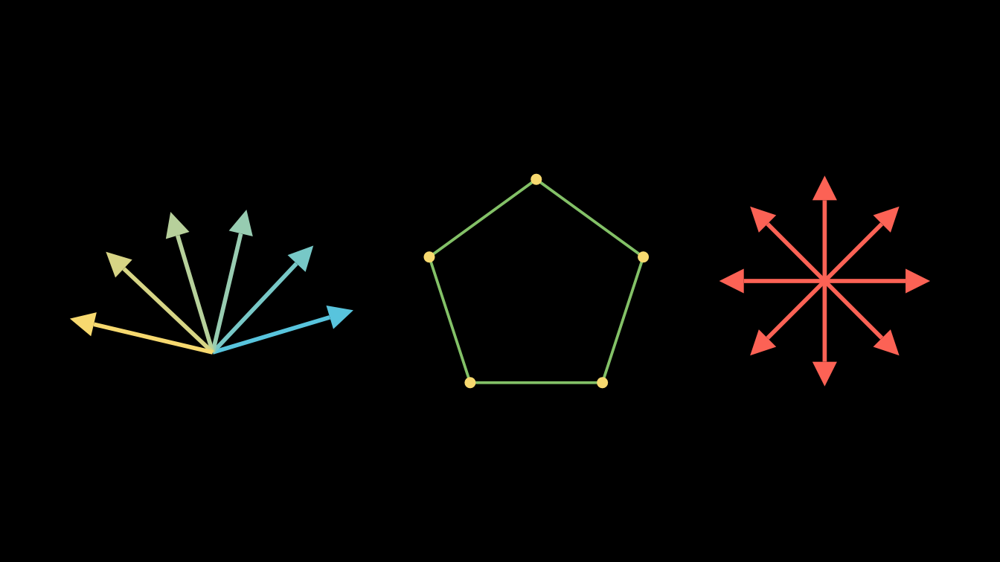
Complex numbers
The plane doubles as the complex plane: complex_to_R3()
turns x + yi into c(x, y, 0) and
R3_to_complex() goes back.
complex_func_to_R3_func() wraps a function of a complex
number into a function of a point, which is what
apply_function() expects.
complex_to_R3(1 + 2i)
#> [1] 1 2 0
R3_to_complex(c(3, -1, 0))
#> [1] 3-1i
square_it <- complex_func_to_R3_func(function(z) z^2)
square_it(c(1, 1, 0)) # (1 + i)^2 = 2i
#> [1] 0 2 0Here a grid of lines is bent by z^2 / 2. Each line gets
extra curves first (insert_n_curves()) so the bent copy
stays smooth.
make_grid <- function() {
g <- VGroup()
for (k in seq(-1.5, 1.5, by = 0.5)) {
g$add(Line(c(-1.5, k, 0), c(1.5, k, 0), color = BLUE, stroke_width = 2))
g$add(Line(c(k, -1.5, 0), c(k, 1.5, 0), color = YELLOW, stroke_width = 2))
}
for (line in g$submobjects) line$insert_n_curves(20)
g
}
half_square <- complex_func_to_R3_func(function(z) z^2 / 2)
before <- make_grid()
after <- make_grid()$apply_function(half_square)
plot(VGroup(before, after)$arrange(RIGHT, buff = 1.5))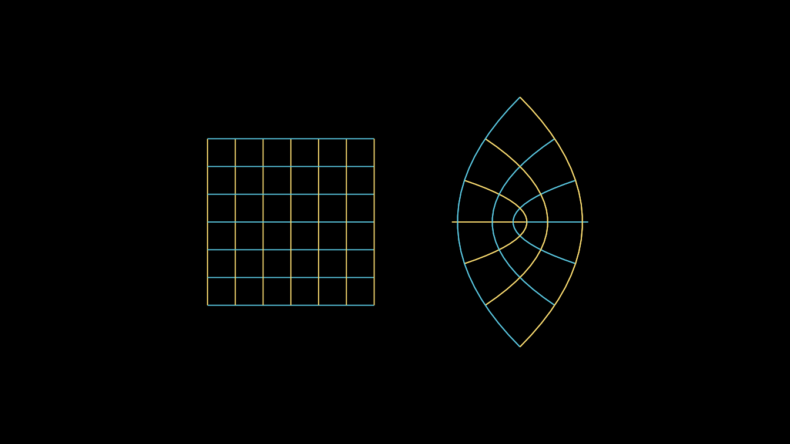
Intersections and bisectors
line_intersection() intersects two lines in the plane,
each given by two points. find_intersection() takes a point
and a direction for each line instead, and handles many pairs at once
when given matrices. perpendicular_bisector() returns the
two end points of the perpendicular bisector of a segment.
l1 <- rbind(c(-3, -1, 0), c(1, 2, 0))
l2 <- rbind(c(-3, 2, 0), c(0, -1.5, 0))
p <- line_intersection(l1, l2)
p
#> [1] -1.434783 0.173913 0.000000
find_intersection(c(0, 0, 0), c(1, 1, 0), c(2, 0, 0), c(-1, 1, 0))
#> [1] 1 1 0
find_intersection(rbind(ORIGIN, ORIGIN), rbind(RIGHT, UR),
rbind(c(2, 1, 0), c(0, 3, 0)), rbind(DOWN, RIGHT)) # one pair per row
#> [,1] [,2] [,3]
#> [1,] 2 0 0
#> [2,] 3 3 0
seg <- rbind(c(1.5, -1, 0), c(4, 1, 0))
pb <- perpendicular_bisector(seg)
pb
#> [,1] [,2] [,3]
#> [1,] 0.75 2.5 0
#> [2,] 4.75 -2.5 0
plot(VGroup(
Line(l1[1, ], l1[2, ], color = BLUE),
Line(l2[1, ], l2[2, ], color = GREEN),
Dot(p, color = YELLOW, radius = 0.12),
Line(seg[1, ], seg[2, ], color = RED),
Dot(seg[1, ], color = RED), Dot(seg[2, ], color = RED),
DashedLine(pb[1, ], pb[2, ], color = WHITE),
Dot(midpoint(seg[1, ], seg[2, ]), color = WHITE)
))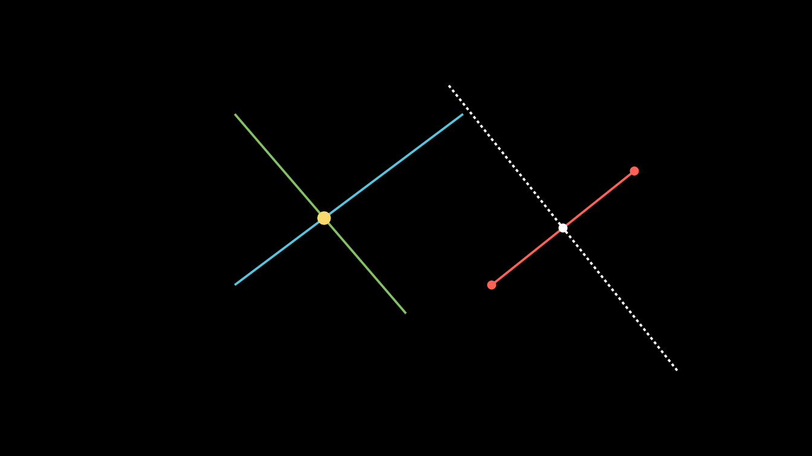
Polygons: area, orientation and winding
shoelace() computes the signed area of a polygon
(positive when its vertices run clockwise) and
shoelace_direction() turns the sign into "CW"
or "CCW". get_winding_number() counts how many
times a closed path winds counterclockwise around the origin.
unit_square <- rbind(c(0, 0), c(1, 0), c(1, 1), c(0, 1))
shoelace(unit_square)
#> [1] -1
shoelace_direction(unit_square)
#> [1] "CCW"
shoelace_direction(unit_square[4:1, ])
#> [1] "CW"
get_winding_number(Circle()$points)
#> [1] 1
get_winding_number(Circle()$shift(3 * RIGHT)$points) # origin outside
#> [1] 7.067899e-17Spherical coordinates
cartesian_to_spherical() returns
c(r, theta, phi): the distance from the origin, the angle
around the z axis, and the angle down from the z axis.
spherical_to_cartesian() goes back.
s <- cartesian_to_spherical(c(1, 1, 1))
s
#> [1] 1.7320508 0.7853982 0.9553166
spherical_to_cartesian(s)
#> [1] 1 1 1
zapsmall(spherical_to_cartesian(c(2, 0, PI / 2)))
#> [1] 2 0 0Banded matrices
thick_diagonal() returns a 0/1 matrix with a band of
ones around the diagonal.
thick_diagonal(5, thickness = 2)
#> [,1] [,2] [,3] [,4] [,5]
#> [1,] 1 1 0 0 0
#> [2,] 1 1 1 0 0
#> [3,] 0 1 1 1 0
#> [4,] 0 0 1 1 1
#> [5,] 0 0 0 1 1Quaternions
Quaternions are numeric vectors c(w, x, y, z). They
describe 3D rotations (upstream’s OpenGL camera stores its orientation
as one). quaternion_from_angle_axis() builds the rotation
quaternion, quaternion_mult() multiplies any number of
quaternions from left to right, quaternion_conjugate()
negates the vector part, and angle_axis_from_quaternion()
recovers the angle and axis. Rotating a vector v by
q is the product q * v * conj(q), with
v as a quaternion whose real part is zero:
q <- quaternion_from_angle_axis(PI / 2, OUT)
q
#> [1] 0.7071068 0.0000000 0.0000000 0.7071068
zapsmall(quaternion_mult(q, c(0, RIGHT), quaternion_conjugate(q))) # RIGHT turns to UP
#> [1] 0 0 1 0
quaternion_mult() # the identity
#> [1] 1 0 0 0
str(angle_axis_from_quaternion(q))
#> List of 2
#> $ angle: num 1.57
#> $ axis : num [1:3] 0 0 1Interpolation and simple functions
interpolate(start, end, alpha) blends linearly and works
on numbers, points and whole matrices of points.
inverse_interpolate() answers the reverse question,
match_interpolate() maps a value from one range to another,
and mid() is the midpoint.
interpolate(0, 10, 0.3)
#> [1] 3
interpolate(LEFT, UP, 0.5)
#> [1] -0.5 0.5 0.0
inverse_interpolate(0, 10, 3)
#> [1] 0.3
match_interpolate(0, 100, 0, 10, 3) # 3 on [0, 10] is 30 on [0, 100]
#> [1] 30
mid(2, 4)
#> [1] 3integer_interpolate() splits a progress value into an
index and the fraction left over; DrawBorderThenFill(), for
example, uses it to split its progress into an outline stage and a fill
stage. The index is 0 based, as upstream’s: add 1 before using it to
index an R vector.
str(integer_interpolate(0, 10, 0.46))
#> List of 2
#> $ index : int 4
#> $ residue: num 0.6
str(integer_interpolate(0, 10, 1))
#> List of 2
#> $ index : int 9
#> $ residue: num 1sigmoid() is the logistic function,
binary_search() inverts a monotone function numerically
(returning NULL when the target is out of reach), and
clip_value() clamps a number to a range. It is called
clip_value() because an exported clip() would
mask graphics::clip(); upstream’s choose() is
simply base::choose().
sigmoid(c(-4, 0, 4))
#> [1] 0.01798621 0.50000000 0.98201379
binary_search(function(x) x^2 + 3 * x + 1, target = 11, lower_bound = 0, upper_bound = 5)
#> [1] 2.000046
binary_search(function(x) x^2 + 3 * x + 1, target = 71, lower_bound = 0, upper_bound = 5)
#> NULL
clip_value(5, 0, 3)
#> [1] 3
clip_value(-1, 0, 3)
#> [1] 0
choose(5, 2)
#> [1] 10Bezier curves
Every VMobject is a chain of cubic Bezier curves, stored four control points per curve (anchor, handle, handle, anchor). The helpers below work on such control points, given as a matrix with one point per row.
Evaluating a curve
bezier(points) returns a function of t in
[0, 1]; give it a vector of t values to get a
matrix of points.
Cutting curves into pieces
partial_bezier_points(points, a, b) returns the control
points of the part of the curve between t = a and
t = b. split_bezier() cuts at one
t and stacks both halves; subdivide_bezier()
cuts into n equal parameter pieces;
bezier_remap() subdivides a path of several curves until it
has a requested number of curves, which is how two paths are made
compatible before a Transform.
partial_bezier_points(cubic, 0.25, 0.75)
#> [,1] [,2] [,3]
#> [1,] -1.921875 0.15625 0
#> [2,] -1.015625 0.34375 0
#> [3,] 0.203125 -0.34375 0
#> [4,] 1.359375 -0.15625 0
nrow(split_bezier(cubic, 0.5))
#> [1] 8
nrow(subdivide_bezier(cubic, 3))
#> [1] 12
nrow(bezier_remap(Square()$points, 7)) / 4 # a square's 4 curves become 7
#> [1] 7The picture shows the control polygon (dashed), the whole curve
(blue), the part from t = 0.25 to t = 0.75
(yellow) and the points where subdivide_bezier() cuts it in
three (red).
whole <- VMobject(color = BLUE, stroke_width = 4)
whole$set_points(cubic)
middle <- VMobject(color = YELLOW, stroke_width = 10)
middle$set_points(partial_bezier_points(cubic, 0.25, 0.75))
pieces <- subdivide_bezier(cubic, 3)
cuts <- VGroup(lapply(c(4, 8), function(i) Dot(pieces[i, ], color = RED, radius = 0.1)))
control <- VGroup(
DashedLine(cubic[1, ], cubic[2, ], color = GREY_B), DashedLine(cubic[2, ], cubic[3, ], color = GREY_B),
DashedLine(cubic[3, ], cubic[4, ], color = GREY_B),
VGroup(lapply(1:4, function(i) Dot(cubic[i, ], color = WHITE)))
)
plot(VGroup(control, whole, middle, cuts))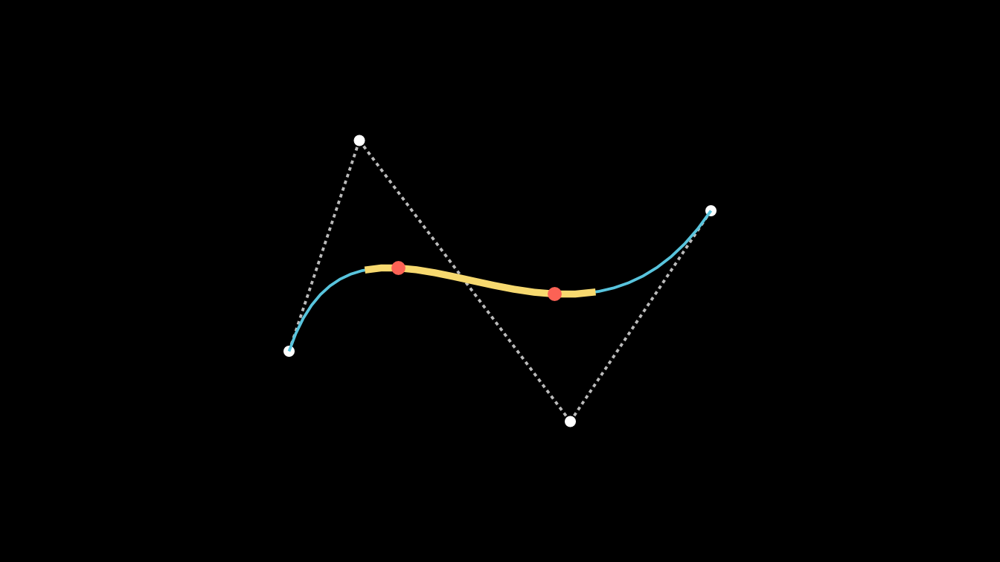
Finding a point on a curve
proportions_along_bezier_curve_for_point() solves for
the parameters at which the curve passes through a point, and
point_lies_on_bezier() says whether there is any.
p <- curve(0.3)
proportions_along_bezier_curve_for_point(p, cubic)
#> [1] 0.3
point_lies_on_bezier(p, cubic)
#> [1] TRUE
point_lies_on_bezier(c(0, 0, 0), cubic)
#> [1] FALSESmooth splines
get_smooth_cubic_bezier_handle_points() computes handles
that join a list of anchors into a smooth spline (this is what
set_points_smoothly() and make_smooth() use).
It returns the first and second handle of each curve.
anchors <- rbind(c(-4, -1, 0), c(-2, 1.5, 0), c(0, -1, 0), c(2, 1, 0), c(4, -1.5, 0))
h <- get_smooth_cubic_bezier_handle_points(anchors)
h
#> $h1
#> [,1] [,2] [,3]
#> [1,] -3.3333333 0.4136905 0
#> [2,] -1.3333333 1.1726190 0
#> [3,] 0.6666667 -1.1041667 0
#> [4,] 2.6666667 1.2440476 0
#>
#> $h2
#> [,1] [,2] [,3]
#> [1,] -2.6666667 1.8273810 0
#> [2,] -0.6666667 -0.8958333 0
#> [3,] 1.3333333 0.7559524 0
#> [4,] 3.3333333 -0.1279762 0Interleaving anchors and handles gives the points of a VMobject:
n <- nrow(anchors) - 1
pts <- do.call(rbind, lapply(seq_len(n), function(i) {
rbind(anchors[i, ], h$h1[i, ], h$h2[i, ], anchors[i + 1, ])
}))
spline <- VMobject(color = YELLOW, stroke_width = 6)
spline$set_points(pts)
handles <- VGroup(lapply(seq_len(n), function(i) {
VGroup(Line(anchors[i, ], h$h1[i, ], color = GREY_B, stroke_width = 2),
Line(h$h2[i, ], anchors[i + 1, ], color = GREY_B, stroke_width = 2),
Dot(h$h1[i, ], color = GREY_B, radius = 0.05), Dot(h$h2[i, ], color = GREY_B, radius = 0.05))
}))
plot(VGroup(handles, spline, VGroup(lapply(1:5, function(i) Dot(anchors[i, ], color = RED)))))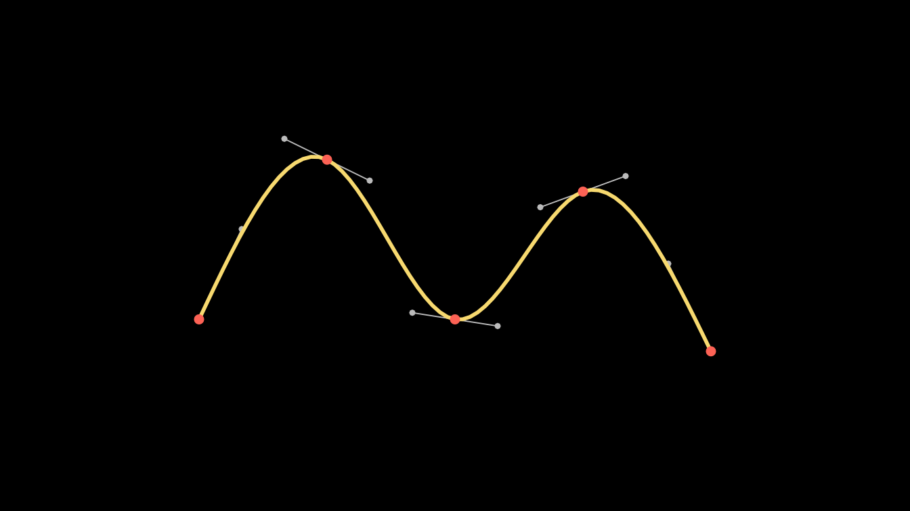
is_closed() tells whether a spline ends where it starts,
which decides whether the smoothing also wraps around the start point.
It reproduces upstream’s test exactly, including a quirk: the tolerance
uses the signed first coordinate, so a spline starting at a negative
coordinate never counts as closed.
Triangulation and the pole of inaccessibility
Ear clipping
earclip_triangulation(verts, ring_ends) cuts a polygon,
possibly with holes, into triangles. verts lists the
vertices of every ring one after the other, and ring_ends
gives the cumulative vertex count at the end of each ring. The result
holds row indices of verts, three per triangle.
outer <- rbind(c(-3, -2, 0), c(3, -2, 0), c(3, 2, 0), c(-3, 2, 0))
hole <- rbind(c(-1, -1, 0), c(-1, 1, 0), c(1, 1, 0), c(1, -1, 0))
verts <- rbind(outer, hole)
tri <- matrix(earclip_triangulation(verts, ring_ends = c(4, 8)), ncol = 3, byrow = TRUE)
tri
#> [,1] [,2] [,3]
#> [1,] 4 1 5
#> [2,] 8 5 1
#> [3,] 4 5 6
#> [4,] 8 1 2
#> [5,] 3 4 6
#> [6,] 7 8 2
#> [7,] 3 6 7
#> [8,] 7 2 3
tri_cols <- color_gradient(c(BLUE, TEAL, GREEN, YELLOW), nrow(tri))
triangles <- VGroup(lapply(seq_len(nrow(tri)), function(k) {
Polygon(verts[tri[k, ], ], color = WHITE, stroke_width = 2, fill_color = tri_cols[k], fill_opacity = 0.8)
}))
plot(triangles)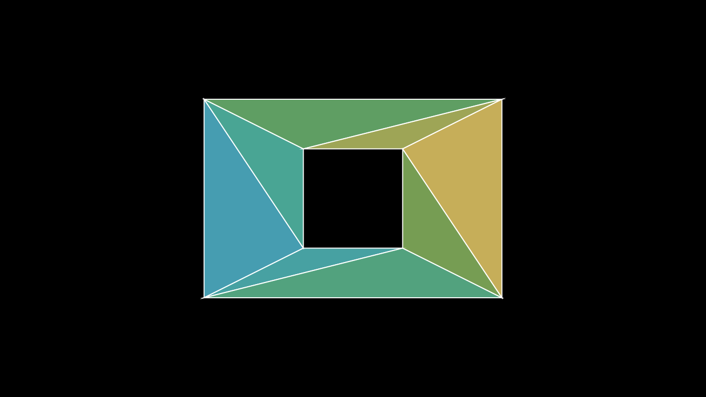
Polylabel
polylabel() finds the point inside a polygon that is
farthest from its edges, the pole of inaccessibility, which is the best
spot for a label. It returns the point c and its distance
d to the nearest edge. LabeledPolygram() uses
it to place its label.
L_shape <- rbind(c(-3, -2), c(3, -2), c(3, -0.5), c(-1, -0.5), c(-1, 2), c(-3, 2), c(-3, -2))
pole <- polylabel(list(L_shape))
pole
#> $c
#> [1] -1.953125 -0.953125
#>
#> $d
#> [1] 1.046875
shape <- Polygon(cbind(L_shape[-7, ], 0), color = BLUE, fill_opacity = 0.3)
center <- c(pole$c, 0)
plot(VGroup(shape, Circle(radius = pole$d, color = YELLOW)$move_to(center), Dot(center, color = YELLOW)))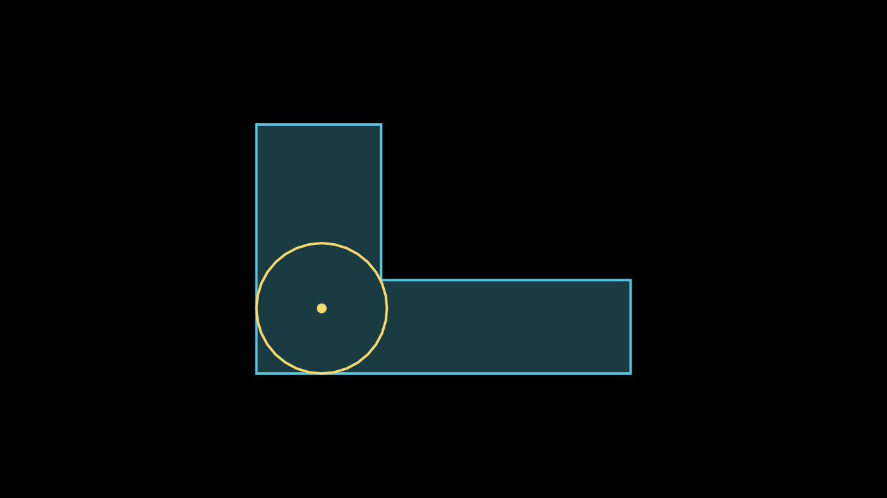
Rate functions
A rate function maps the progress of an animation, a number
t from 0 to 1, to how far along the animation should be.
The default for most animations is smooth_rate()
(upstream’s smooth, renamed so it does not mask
stats::smooth()). Pass any rate function as
rate_func:
self$play(sq$animate$shift(RIGHT), rate_func = there_and_back)
self$play(Create(circle, rate_func = ease_out_bounce))
self$play(dot$animate(rate_func = linear)$shift(UP))Rate functions take a single number. To evaluate one on many values,
use vapply() (or sapply()):
t <- c(0, 0.25, 0.5, 0.75, 1)
vapply(t, smooth_rate, numeric(1))
#> [1] 0.00000000 0.07010372 0.50000000 0.92989628 1.00000000
vapply(t, there_and_back, numeric(1))
#> [1] 0.0 0.5 1.0 0.5 0.0
round(vapply(t, ease_out_back, numeric(1)), 3)
#> [1] 0.000 0.817 1.088 1.064 1.000Every rate function
The grid below plots all of them. The dotted lines mark 0 and 1;
curves that leave that band overshoot (the back and
elastic families) or pull back first
(running_start).
rf <- rate_functions[setdiff(names(rate_functions),
c("unit_interval", "zero", "not_quite_there", "squish_rate_func"))]
names(rf)[names(rf) == "smooth"] <- "smooth_rate"
rf[["not_quite_there()"]] <- not_quite_there()
rf[["squish_rate_func(smooth_rate)"]] <- squish_rate_func(smooth_rate)
t <- seq(0, 1, length.out = 201)
op <- par(mfrow = c(8, 6), mar = c(1.2, 1.4, 1.6, 0.4), mgp = c(2, 0.35, 0), tcl = -0.2,
cex.main = 0.68, cex.axis = 0.6, font.main = 1)
for (nm in names(rf)) {
y <- vapply(t, rf[[nm]], numeric(1))
plot(t, y, type = "l", lwd = 2, col = "#236B8E", main = nm, xlab = "", ylab = "",
ylim = range(0, 1, y))
abline(h = c(0, 1), col = "grey70", lty = 3)
}
par(op)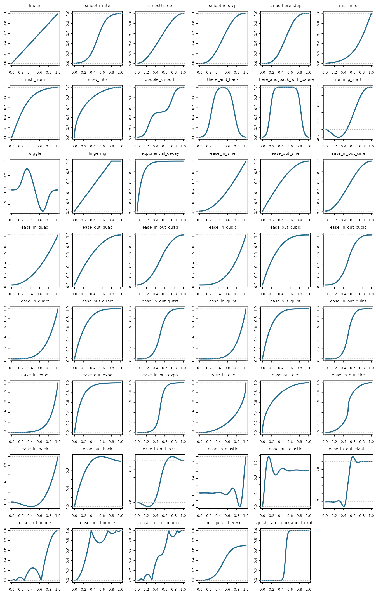
For reference, the families are:
- Basic:
linear,smooth_rate,smoothstep,smootherstep,smoothererstep,double_smooth,rush_into,rush_from,slow_into,lingering,exponential_decay. - Back and forth:
there_and_back,there_and_back_with_pause,wiggle,running_start. - Factories that build a rate function from another one:
not_quite_there(func, proportion)stops atproportionof the way andsquish_rate_func(func, a, b)runsfunconly betweenaandb. - Easing curves, each in three versions:
ease_in_starts slowly,ease_out_ends slowly andease_in_out_does both.
| curve | ease in | ease out | ease in and out |
|---|---|---|---|
| sine | ease_in_sine |
ease_out_sine |
ease_in_out_sine |
| quad | ease_in_quad |
ease_out_quad |
ease_in_out_quad |
| cubic | ease_in_cubic |
ease_out_cubic |
ease_in_out_cubic |
| quart | ease_in_quart |
ease_out_quart |
ease_in_out_quart |
| quint | ease_in_quint |
ease_out_quint |
ease_in_out_quint |
| expo | ease_in_expo |
ease_out_expo |
ease_in_out_expo |
| circ | ease_in_circ |
ease_out_circ |
ease_in_out_circ |
| back | ease_in_back |
ease_out_back |
ease_in_out_back |
| elastic | ease_in_elastic |
ease_out_elastic |
ease_in_out_elastic |
| bounce | ease_in_bounce |
ease_out_bounce |
ease_in_out_bounce |
Shape parameters
Some rate functions take an extra argument after t:
inflection for smooth_rate(),
rush_into(), rush_from() and
there_and_back(); pause_ratio for
there_and_back_with_pause(); pull_factor for
running_start(); wiggles for
wiggle(); and half_life for
exponential_decay(). Fix them with a small wrapper:
smooth_rate(0.3)
#> [1] 0.1140365
smooth_rate(0.3, inflection = 4)
#> [1] 0.2505568
gentle <- function(t) smooth_rate(t, inflection = 4)
wiggle(0.3, wiggles = 4)
#> [1] -0.4315481Writing your own
Any R function of one number works as a rate function. It should
usually return 0 at t = 0 and 1 at t = 1, so
the animation starts and ends where expected.
unit_interval() clamps a function to 0 before the start and
1 after the end, and zero() makes it 0 outside
[0, 1]; these are upstream’s decorators.
three_steps <- function(t) (floor(3 * t) + smooth_rate((3 * t) %% 1)) / 3
power_rate <- function(p) function(t) t^p # a factory, like not_quite_there()
cubed <- power_rate(3)
clamped <- unit_interval(function(t) t^2)
c(three_steps(0.5), cubed(0.5), clamped(1.5), zero(function(t) t^2)(1.5))
#> [1] 0.500 0.125 1.000 0.000Plotted a little beyond [0, 1], only the clamped version
stays at 0 and 1 outside the unit interval. Animations only ever
evaluate t inside it, so clamping matters when you call a
rate function yourself.
op <- par(mfrow = c(1, 3), mar = c(2, 2, 2, 0.5), mgp = c(2, 0.4, 0), tcl = -0.2, cex.main = 0.9)
fs <- list(three_steps = three_steps, `power_rate(3)` = cubed, `unit_interval(t^2)` = clamped)
for (nm in names(fs)) {
x <- seq(-0.2, 1.2, length.out = 281)
plot(x, vapply(x, fs[[nm]], numeric(1)), type = "l", lwd = 2, col = "#236B8E", main = nm, xlab = "", ylab = "")
abline(v = c(0, 1), col = "grey70", lty = 3)
}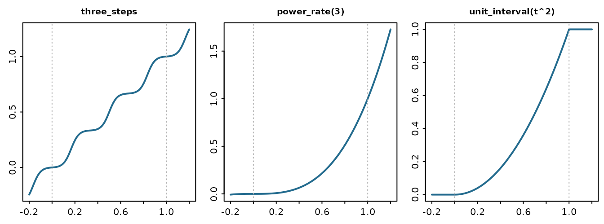
par(op)The race below moves five dots the same distance in the same time
with different rate functions. there_and_back returns to
its start, so its dot ends where it began.
RateRace <- R6::R6Class("RateRace", inherit = Scene,
public = list(construct = function() {
funcs <- list(linear = linear, smooth_rate = smooth_rate, there_and_back = there_and_back,
ease_out_bounce = ease_out_bounce, three_steps = three_steps)
cols <- c(BLUE, GREEN, YELLOW, ORANGE, RED)
dots <- list()
for (i in seq_along(funcs)) {
y <- 2.4 - (i - 1) * 1.2
label <- Text(names(funcs)[i], font_size = 26, color = cols[i])$move_to(c(-4.6, y, 0))
track <- Line(c(-2.5, y, 0), c(5.5, y, 0), color = GREY_D, stroke_width = 2)
dots[[i]] <- Dot(c(-2.5, y, 0), radius = 0.15, color = cols[i])
self$add(label, track, dots[[i]])
}
self$play(lapply(seq_along(funcs), function(i) {
dots[[i]]$animate(rate_func = funcs[[i]])$shift(8 * RIGHT)
}), run_time = 2)
self$wait(0.3)
})
)Path functions
During a Transform, every point travels from where it is
to where it is going. A path function decides the route: it takes the
start points, the end points and the progress alpha, and
returns the points at that moment. Each *_path()
constructor returns such a function.
straight_path()
#> function (start, end, alpha)
#> (1 - alpha) * start + alpha * end
#> <bytecode: 0x649a7894eb70>
#> <environment: namespace:manimR>
start <- rbind(LEFT)
end <- rbind(RIGHT)
zapsmall(straight_path()(start, end, 0.5))
#> [,1] [,2] [,3]
#> LEFT 0 0 0
zapsmall(path_along_arc(PI)(start, end, 0.5))
#> [,1] [,2] [,3]
#> LEFT 0 -1 0
zapsmall(clockwise_path()(start, end, 0.5))
#> [,1] [,2] [,3]
#> LEFT 0 1 0
zapsmall(counterclockwise_path()(start, end, 0.5))
#> [,1] [,2] [,3]
#> LEFT 0 -1 0
zapsmall(spiral_path(PI)(start, end, 0.5))
#> [,1] [,2] [,3]
#> LEFT -1 -1 0
zapsmall(path_along_circles(PI, circles_centers = ORIGIN)(start, end, 0.5))
#> [,1] [,2] [,3]
#> LEFT 0 -1 0-
straight_path()moves in a straight line (the default). -
path_along_arc(arc_angle, axis)swings along a circular arc ofarc_angleradians; positive angles turn counterclockwise.clockwise_path()andcounterclockwise_path()are half turns. -
path_along_circles(arc_angle, circles_centers, axis)turns every point about a center you choose while it also slides toward its target. When the target is not exactly the start turned about that center, the shape deforms on the way: in the scene below, the dot shrinks to a point halfway, because each of its points meets the opposite one. -
spiral_path(angle, axis)moves toward the target while rotating, so points spiral in.
Pass a path function to an animation as path_func.
Transform() also takes path_arc, a shortcut
for path_along_arc() (and path_arc_axis,
path_arc_centers); ClockwiseTransform() and
CounterclockwiseTransform() use half turns.
Because a path function is an ordinary R function, you can sample it to draw the route a point will take. The scene below does that for six choices, drawing each route in gray, then runs the six transforms at once.
route <- function(path, a, b) {
pts <- t(vapply(seq(0, 1, length.out = 60), function(al) as.numeric(path(rbind(a), rbind(b), al)), numeric(3)))
VMobject(color = GREY_C, stroke_width = 3)$set_points_as_corners(pts)
}
PathCompare <- R6::R6Class("PathCompare", inherit = Scene,
public = list(construct = function() {
panels <- list(
list(label = "straight_path()", center = c(-4.6, 1.2, 0), args = list(path_func = straight_path())),
list(label = "clockwise_path()", center = c(0, 1.2, 0), args = list(path_func = clockwise_path())),
list(label = "counterclockwise_path()", center = c(4.6, 1.2, 0),
args = list(path_func = counterclockwise_path())),
list(label = "path_arc = PI / 2", center = c(-4.6, -2.3, 0), args = list(path_arc = PI / 2)),
list(label = "spiral_path(PI)", center = c(0, -2.3, 0), args = list(path_func = spiral_path(PI))),
list(label = "path_along_circles()", center = c(4.6, -2.3, 0),
args = list(path_func = path_along_circles(PI, c(4.6, -1.8, 0))))
)
cols <- c(BLUE, GREEN, YELLOW, ORANGE, RED, PURPLE)
anims <- list()
for (i in seq_along(panels)) {
pnl <- panels[[i]]
a <- pnl$center + LEFT
b <- pnl$center + RIGHT
path <- pnl$args$path_func %||% path_along_arc(pnl$args$path_arc)
dot <- Dot(a, color = cols[i], radius = 0.12)
title <- Text(pnl$label, font_size = 22)$move_to(pnl$center + c(0, if (i <= 3) 1.6 else 1, 0))
self$add(title, route(path, a, b), Circle(radius = 0.12, color = GREY_B)$move_to(b), dot)
anims[[i]] <- do.call(Transform, c(list(dot, dot$copy()$move_to(b)), pnl$args))
}
self$play(anims, run_time = 2)
self$wait(0.3)
})
)List and dictionary helpers
These are ports of manim.utils.iterables and
manim.utils.config_ops. They work on R vectors and lists;
atomic input gives atomic output.
adjacent_pairs(1:4) # cyclic: the last pair wraps around
#> [[1]]
#> [1] 1 2
#>
#> [[2]]
#> [1] 2 3
#>
#> [[3]]
#> [1] 3 4
#>
#> [[4]]
#> [1] 4 1
adjacent_n_tuples(1:5, 3)[1:2]
#> [[1]]
#> [1] 1 2 3
#>
#> [[2]]
#> [1] 2 3 4
concatenate_lists(1:2, 3:4, 5)
#> [1] 1 2 3 4 5
list_difference_update(1:5, c(2, 4))
#> [1] 1 3 5
list_update(c(1, 2, 3, 4), c(2, 5)) # 2 moves to the end
#> [1] 1 3 4 2 5
remove_list_redundancies(c(1, 2, 1, 3, 2, 4)) # keeps the last copy
#> [1] 1 3 2 4
str(remove_nones(list(1, NULL, 0, "", "a", FALSE)))
#> List of 2
#> $ : num 1
#> $ : chr "a"
stretch_array_to_length(1:3, 7)
#> [1] 1 1 1 2 2 3 3
str(make_even(1:3, 4:8))
#> List of 2
#> $ : int [1:5] 1 1 2 2 3
#> $ : int [1:5] 4 5 6 7 8
str(make_even_by_cycling(1:2, 1:5))
#> List of 2
#> $ : int [1:5] 1 2 1 2 1
#> $ : int [1:5] 1 2 3 4 5listify() and tuplify() turn a value into a
list (R has no tuples, so both return lists); given a mobject they
return its submobjects. all_elements_are_instances() checks
classes, accepting a class name or an R6 generator.
str(listify("a"))
#> List of 1
#> $ : chr "a"
str(tuplify(1:2))
#> List of 2
#> $ : int 1
#> $ : int 2
length(listify(VGroup(Circle(), Square())))
#> [1] 2
all_elements_are_instances(list(Circle(), Square()), "VMobject")
#> [1] TRUE
all_elements_are_instances(list(Circle(), Square()), CircleClass)
#> [1] FALSEThe dictionary helpers merge nested named lists.
update_dict_recursively() updates an environment in place
(as upstream updates a dict) but returns a new list when given a list,
so assign the result. DictAsObject() turns a named list
into an environment you can read with $.
defaults <- list(color = "white", stroke = list(width = 4, opacity = 1))
str(merge_dicts_recursively(defaults, list(stroke = list(width = 8))))
#> List of 2
#> $ color : chr "white"
#> $ stroke:List of 2
#> ..$ width : num 8
#> ..$ opacity: num 1
settings <- update_dict_recursively(defaults, list(color = "red"))
settings$color
#> [1] "red"
obj <- DictAsObject(list(x = 1, y = "two"))
obj$y
#> [1] "two"File and path helpers
Ports of manim.utils.file_ops, and the image and sound
lookups. These examples only touch the session’s temporary
directory.
add_extension_if_not_present("scene", ".png")
#> [1] "scene.png"
add_extension_if_not_present("scene.png", ".png")
#> [1] "scene.png"
work <- guarantee_existence(file.path(tempdir(), "manimR-utilities"))
dir.exists(work)
#> [1] TRUE
fresh <- guarantee_empty_existence(file.path(work, "frames")) # deletes, then recreates
length(list.files(fresh))
#> [1] 0seek_full_path_from_defaults() finds a file by name in a
directory, trying each extension in turn.
get_full_raster_image_path() and
get_full_sound_file_path() do the same for images
(.jpg, .jpeg, .png,
.gif, .ico) and sounds (.wav,
.mp3) in the assets_dir setting;
color_using_background_image(), for example, looks up an
image given by name this way.
png::writePNG(array(0.5, c(4, 4, 3)), file.path(work, "logo.png"))
basename(seek_full_path_from_defaults("logo", work, c(".jpg", ".png")))
#> [1] "logo.png"
with_manim_config(list(assets_dir = work), basename(get_full_raster_image_path("logo")))
#> [1] "logo.png"
writeLines("", file.path(work, "click.wav")) # a stand in for a real sound file
basename(get_full_sound_file_path("click", assets_dir = work))
#> [1] "click.wav"modify_atime() sets a file’s access time to now (the
renderer does this when it reuses a cached partial movie),
ensure_executable() says whether a program can be run, and
open_file() opens a file with the system viewer:
modify_atime(file.path(work, "logo.png"))
unname(ensure_executable("ffmpeg"))
#> [1] TRUE
ensure_executable("surely-not-a-program")
#> [1] FALSECommand helpers
capture() runs a program (the first element of a
character vector, then its arguments) and returns its output, error
output and exit code. get_dir_layout() lists every file
below a directory.
res <- capture(c(file.path(R.home("bin"), "Rscript"), "-e", "cat(6 * 7)"))
str(res)
#> List of 3
#> $ out : chr "42"
#> $ err : chr ""
#> $ returncode: int 0
get_dir_layout(work)
#> [1] "click.wav" "logo.png"get_video_metadata() reads the size, frame count,
duration, frame rate and codec of a video with ffprobe. Here
capture() asks ffmpeg for a one second test video
first:
video <- file.path(work, "test.mp4")
out <- capture(c("ffmpeg", "-y", "-v", "error", "-f", "lavfi",
"-i", "testsrc=duration=1:size=320x240:rate=15", "-pix_fmt", "yuv420p", video))
out$returncode
#> [1] 0
str(get_video_metadata(video))
#> List of 7
#> $ width : int 320
#> $ height : int 240
#> $ nb_frames : chr "15"
#> $ duration : chr "1.000000"
#> $ avg_frame_rate: chr "15/1"
#> $ codec_name : chr "h264"
#> $ pix_fmt : chr "yuv420p"Checking mobject methods
assert_is_mobject_method() checks that a function is a
method of a mobject, such as sq$shift. Use it in your own
functions that take a method as an argument, to fail early with a clear
message.
sq <- Square()
invisible(assert_is_mobject_method(sq$shift)) # fine
tryCatch(assert_is_mobject_method(mean), error = conditionMessage)
#> [1] "Expected a method of a mobject, such as sq$shift"Plugins
Upstream finds plugins through Python entry points. A manimR plugin
is an ordinary installed R package whose DESCRIPTION
contains the line
Config/manimR/plugin: truelist_plugins() prints the plugins found and
get_plugins() loads them and returns their namespaces,
named by package, so a scene can call
get_plugins()$myplugin$MyMobject().
list_plugins()
#> Plugins:
names(get_plugins())
#> character(0)With no plugin installed both are empty. A plugin package simply
exports mobjects, animations or scenes built on manimR’s classes, for
example an R6::R6Class(inherit = manimR::VMobjectClass)
generator and a constructor function.